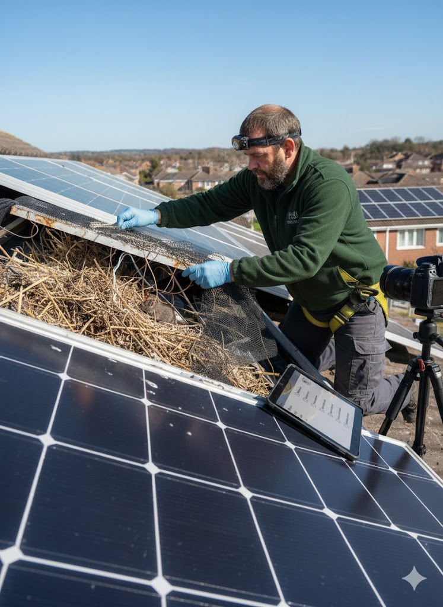
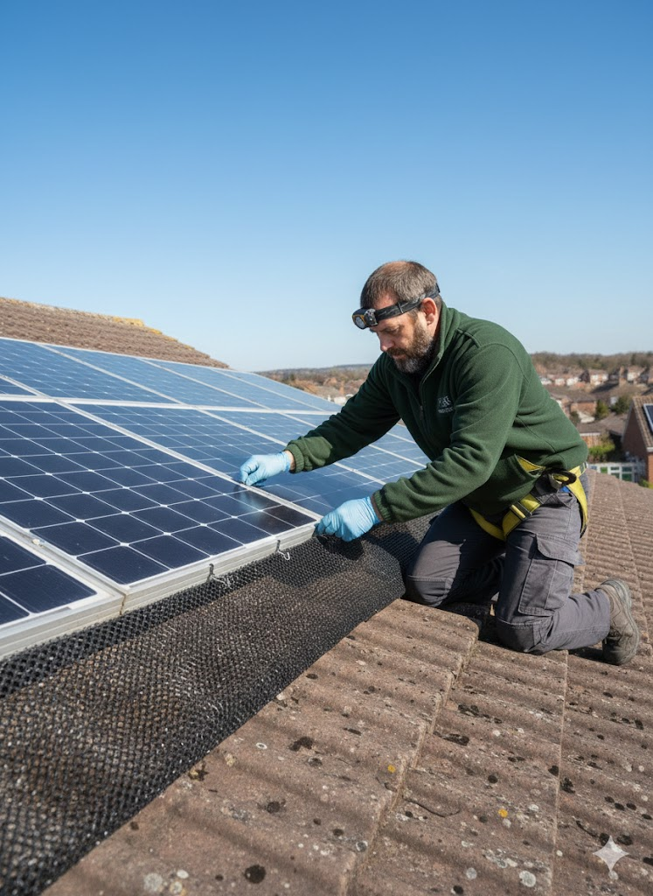
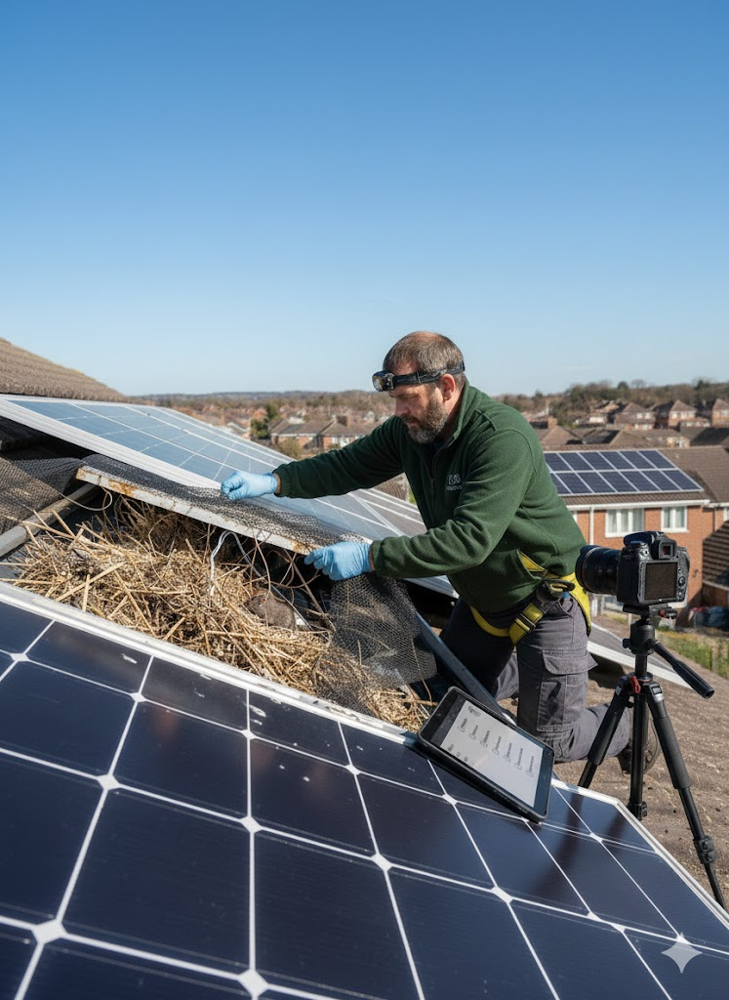

Why Solar Farms in Wales Need Specialist Pest Protection

In the Tywi Valley, Gwendraeth Valley, Ammanford, Llandeilo and surrounding areas, solar farms face increasing pest pressure from rodents (rats/mice), rabbits and moles. These animals cause:
- Rodent damage: Chewing cables and wiring insulation, leading to electrical shorts, system failures and fire risks.
- Rabbit burrowing: Undermining mounting poles, causing ground instability, subsidence and panel misalignment.
- Mole activity: Tunnels under arrays destabilizing soil, risking structural issues and equipment damage.
These issues threaten O&M performance, insurance compliance and revenue from renewable energy sites across Carmarthenshire and South Wales.
Solar Farms & Sites We Protect Across the Region
We provide specialist pest protection for solar installations in the following towns, villages and areas:
- Ammanford
- Llandeilo
- Cross Hands
- Pontarddulais
- Pontyberem
- Tumble
- Carmarthen
- Llanelli
- Gorseinon
- Brynamman
- Gloucestershire Valley
- Cwmamman
- Bettws
- Capel Hendre
- Pantyffynnon
- Ffairfach
- Derwydd
- Pen-y-groes
- Saron
- Garnant
- Gwaun-Cae-Gurwen
If your solar site is in or near these areas (or anywhere in Carmarthenshire/Tywi Valley), call us for a site survey. We also cover nearby rural locations not listed.
Common Pest Damage Risks to Solar PV Arrays

Pests exploit the warm, sheltered space under panels:
- Rodents nest in junction boxes and chew insulation (even modern non-soy wires remain attractive).
- Burrowing creates hot spots, reduces efficiency and increases fire risk from debris or nests.
- Without protection, repairs can cost thousands in downtime and fixes.
Our Poison-Free Solar Farm Pest Solutions

David (ex-Pestokil, RSPH Level 2 certified) provides tailored, eco-safe services:
- Full site surveys & digital audit reports for O&M, insurance and compliance.
- Poison-free trapping and population monitoring for rodents.
- Traditional humane mole catching – effective for maintaining ground stability.
- Rabbit proofing: Supply & install high-grade mesh/fencing to block burrowing.
- Perimeter control & exclusion barriers to prevent re-infestation.
- Long-term O&M contracts with scheduled monitoring for renewable energy sites.
Why Choose Valley Pest Experts for Your Solar Farm

- Local to Ammanford, Llandeilo & Tywi Valley – fast response times.
- Poison-free priority – safe for wildlife, livestock and the environment.
- Audit-ready documentation for insurance and compliance requirements.
- Practical support: Can combine with fence/gate repairs or welding if required.
Prevent costly downtime and protect your renewable investment – contact us today.
Contact for Solar Site Survey or Quote
No call centres. Speak directly to David Hill, your local specialist.
📞 07375 303124 – Call now for a free site assessment in Carmarthenshire
Back to main hub: Valley Pest Experts | Farm Pest Management